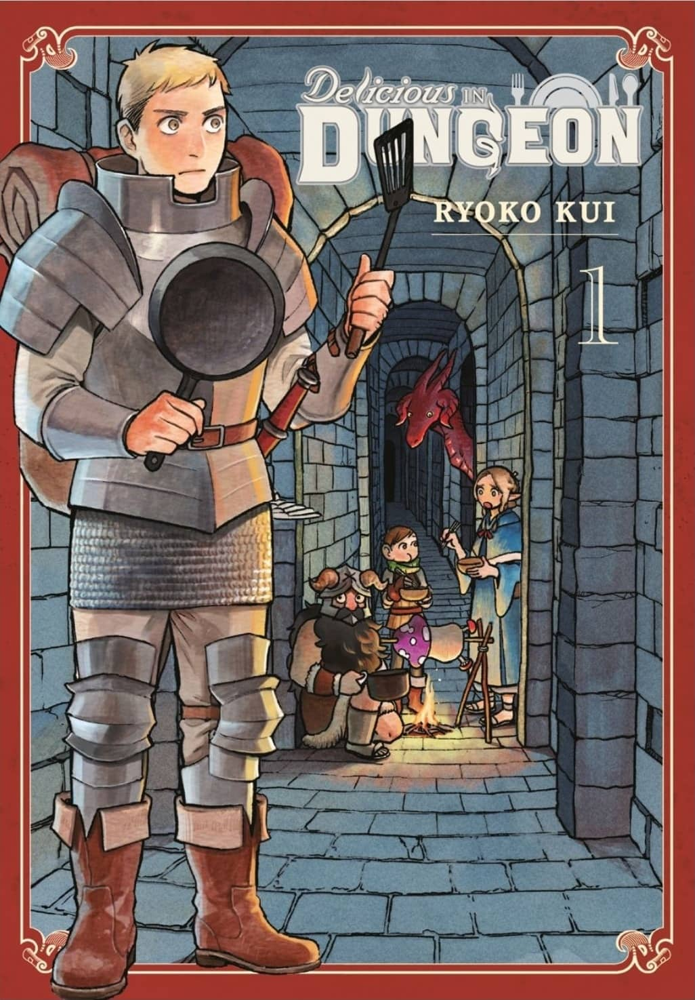

MANGA LIBRARY
* disclaimer: i'm very neurodivergent so if i really like a piece of media, i consume it a ton of times. most, if not all, of the recommendations i make on this site will be media i have repeatedly consumed
* welcome to my manga library!
* i'm quite picky when it comes to manga to read so i hope you enjoy my recommendations!!!


")
